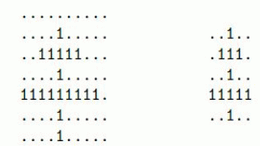

在C 部落，双十字是非常重要的一个部落标志。所谓双十字，如下面两个例子，由两条水平的和一条竖直的“1”线段组成，要求满足以下几个限制：

我们可以找到 5 个满足条件的双十字，分别如下：
注意最终的结果可能很大，只要求输出双十字的个数 mod 1,000,000,009 的值
·两条水平的线段不能在相邻的两行。
·竖直线段上端必须严格高于两条水平线段，下端必须严格低于两条水平线段。
·竖直线段必须将两条水平线段严格划分成相等的两半。
·上方的水平线段必须严格短于下方的水平线段。
所以上面右边的例子是满足要求的最小的双十字。
现在给定一个 R?C的01 矩阵，要求计算出这个 01 矩阵中有多少个双十字。
例如下面这个例子，R=6,C=8，01 矩阵如下：